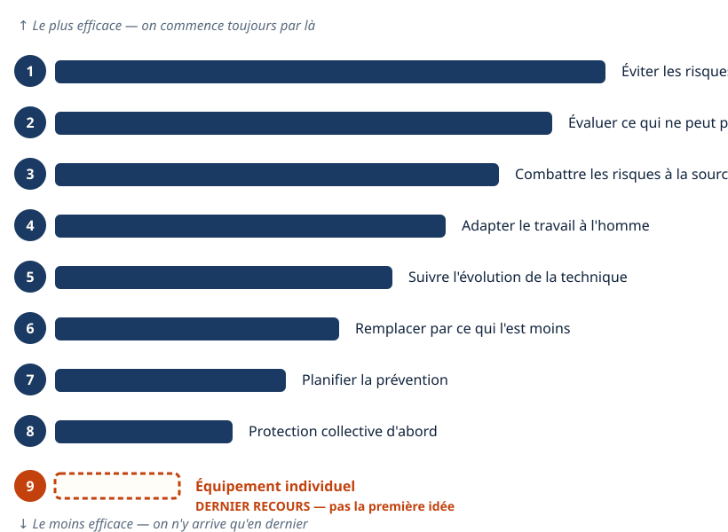
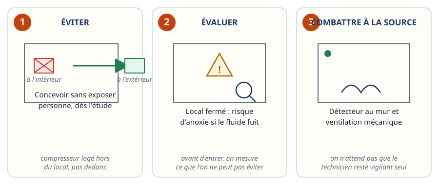
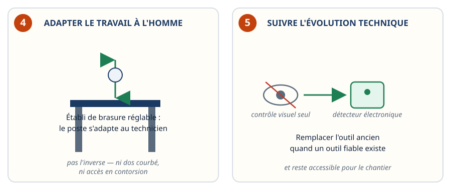
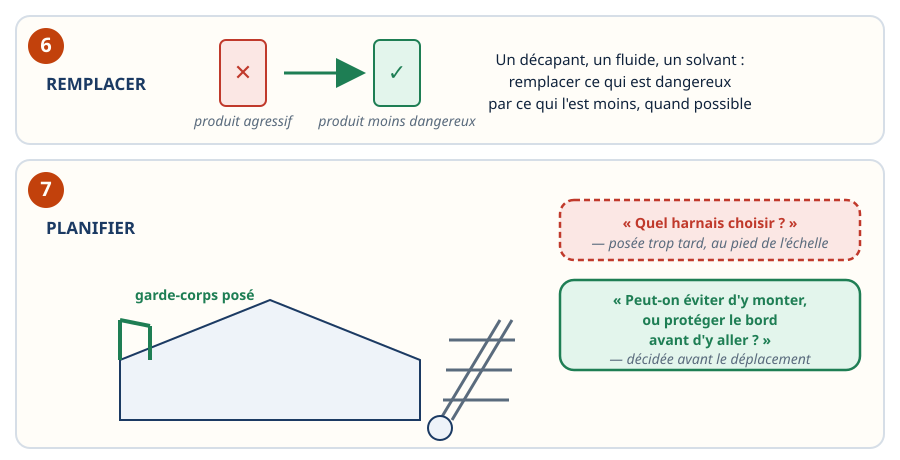
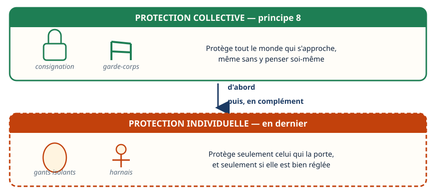
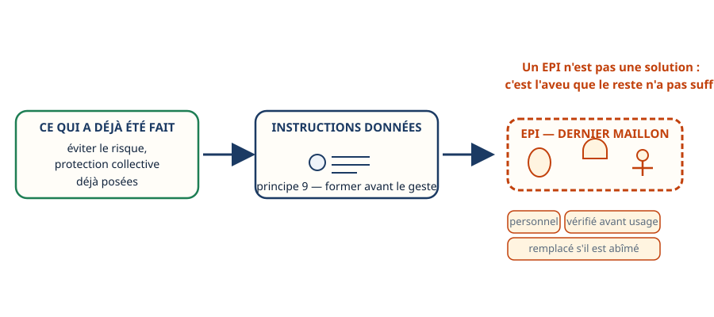
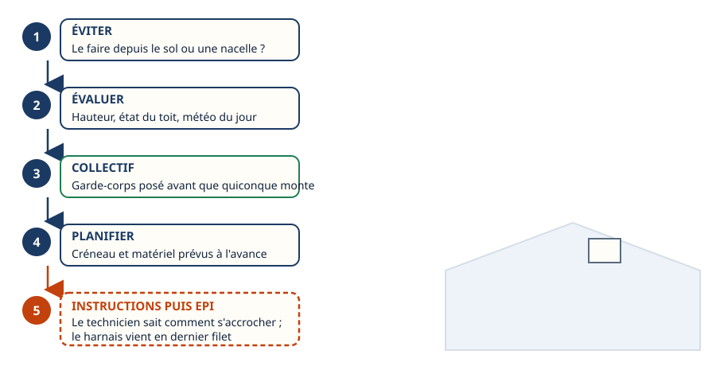
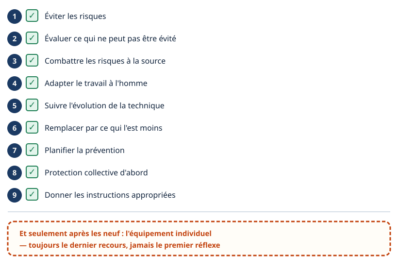

Risques professionnels · niveau BTS
Les 9 principes — l'EPI n'est jamais le premier réflexe
Mini-station commentée · 8 écrans et 4 questions · environ 10 minutes
À la fin de la station, vous savez que la prévention suit un ordre — les neuf principes du code du travail — et vous savez placer l'équipement de protection individuelle où il doit être : en dernier, jamais en premier.
Chaque écran peut être expliqué à voix haute : le bouton « Écouter » commente ce que vous voyez. Rien n'est dit qui ne soit aussi écrit.
Écran 1 sur 8
Une hiérarchie, pas une liste
Le code du travail fixe neuf principes de prévention des risques professionnels. Ce ne sont pas neuf conseils au même niveau : ils sont classés, du plus efficace au moins efficace.
Tout en haut : supprimer le risque. Tout en bas : l'équipement de protection individuelle — casque, gants, harnais. Un technicien qui commence par choisir son équipement a sauté toute la hiérarchie.

Écran 2 sur 8
Éviter, évaluer, combattre à la source
- Éviter le risque : concevoir une installation qui n'expose personne — loger le compresseur en extérieur plutôt que dans un local exigu, choisir un fluide moins dangereux dès l'étude.
- Évaluer ce qui ne peut pas être évité : avant d'entrer dans un local technique fermé, mesurer le risque d'anoxie si une charge de fluide venait à s'échapper.
- Combattre le risque à la source : poser une détection de fuite et une ventilation mécanique dans le local, plutôt que de compter sur la seule vigilance du technicien.

Écran 3 sur 8
Adapter le poste, suivre la technique
- Adapter le travail à l'homme : le poste, l'outillage et les méthodes s'adaptent au technicien — pas l'inverse. Un établi de brasure à bonne hauteur, un accès aux vannes sans contorsion.
- Tenir compte de l'évolution de la technique : remplacer le contrôle visuel seul par un détecteur de fuite électronique, quand un outil fiable existe et reste accessible pour le chantier.

Écran 4 sur 8
Remplacer, puis planifier avant de partir
Remplacer ce qui est dangereux par ce qui l'est moins : un produit agressif par un produit moins nocif, un fluide à fort impact par un fluide de substitution, quand c'est possible.
Planifier la prévention : l'anticiper, pas la subir. Sur une intervention en toiture, la première question n'est pas « quel harnais ? » posée au pied de l'échelle. C'est « peut-on éviter d'y monter, ou protéger le bord du toit avant d'y aller ? » — et cette question se décide avant le déplacement.

Écran 5 sur 8
Le collectif avant l'individuel
Sur un dégivrage ou une intervention électrique, la première question est « peut-on couper et consigner l'installation ? » — avant de penser aux gants isolants.
La consignation et le garde-corps sont des mesures collectives : elles protègent quiconque s'approche, même sans y penser soi-même. Les gants isolants et le harnais sont des mesures individuelles : elles ne protègent que celui qui les porte, et seulement s'il les porte correctement.

Écran 6 sur 8
L'EPI : le dernier maillon, jamais le premier
Le neuvième principe est de donner les instructions appropriées aux travailleurs — former, informer, avant le geste. Et puis, seulement après, vient l'équipement individuel.
Un équipement de protection individuelle n'est pas une solution : c'est l'aveu que tout le reste — la suppression du risque, la protection collective — n'a pas suffi ou n'était pas possible. Le harnais ne remplace pas le garde-corps qu'on n'a pas posé ; les gants isolants ne remplacent pas la consignation qu'on n'a pas faite.
C'est pourquoi l'EPI est personnel, vérifié avant chaque usage, et remplacé dès qu'il est abîmé : il est la dernière ligne, pas la première.

Écran 7 sur 8
Un raisonnement filé : le groupe en toiture
- Éviter : peut-on intervenir depuis le sol ou une nacelle plutôt que de monter ?
- Évaluer : hauteur, état du toit, météo du jour.
- Collectif : garde-corps ou ligne de vie posée avant que quiconque monte.
- Planifier : créneau et matériel prévus à l'avance, pas improvisés sur place.
- Instructions, puis EPI : le technicien sait comment s'accrocher ; le harnais vient en dernier filet, si la protection collective ne suffit pas entièrement.

Écran 8 sur 8
Bilan et le réflexe
- Éviter les risques.
- Évaluer ce qui ne peut pas être évité.
- Combattre les risques à la source.
- Adapter le travail à l'homme.
- Suivre l'évolution de la technique.
- Remplacer par ce qui l'est moins.
- Planifier la prévention.
- Protection collective d'abord.
- Donner les instructions appropriées.
Le réflexe : un EPI n'est jamais le premier choix, il vient après les neuf.

Question 1 sur 4
Sur un circuit de fluide frigorigène, quelle question vient en premier ?
Question 2 sur 4
Consigner l'installation avant d'intervenir, c'est une mesure…
Question 3 sur 4
Devoir porter un EPI sur une intervention, ça signifie…
Question 4 sur 4
Avant d'intervenir sur un groupe en toiture, la première question est…
Les correspondances de la station
- L'habilitation (sous-ligne Électrique) — la règle d'un côté, le geste protégé de l'autre.
Cette station est en préparation sur le plan du réseau.